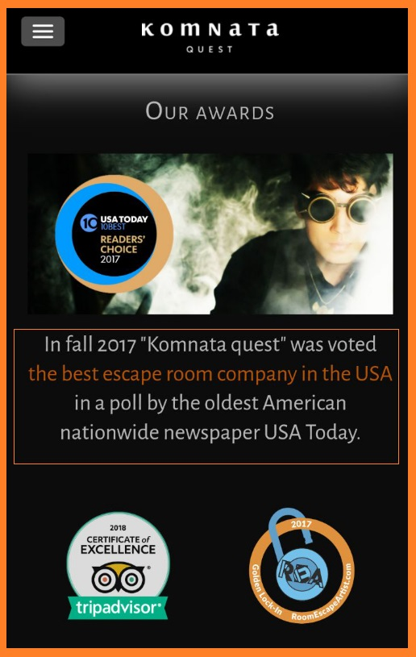

Секреты успешного верстальщика.
Да, технолог (прим. верстальщик) — тоже дизайнер. Такими словами с доклада Артёма Поликарпова (доклад) хочется начать идею данной статьи. Сегодня верстальщику недостаточно «просто верстать» с макета, ему необходимо уметь размышлять (тем самым и повышая свою ценность как профессионала) – как, почему и зачем условный элемент дизайна должен выглядеть именно так? А может быть лучше будет придать ему жирности, или наоборот убавить альфа-канал… В общем, давайте разбираться по порядку, вместе.
Размышления будем вести на реализованном проекте студии Гутдизайн для комнаты квестов на западном рынке (ссылка на сайт). Одностраничный сайт с тремя адаптивами.
Вёрстку проекта предлагаю рассмотреть в двух взаимосвязанных направлениях. Это – техническая (настройка окружения, непосредственно написание самого кода ну и всё вот это) и творческая части (система шрифтов и их разнообразие, поведение адаптивов и т.д.).
Часть 1. Техническая
Первым делом, перед началом работы необходимо подготовить необходимые инструменты, настроить окружение для работы.
Структура проекта. Выстраиваем структуру проекта по папкам.
Описание файлов и папок
source/ В данной папке хранятся ресурсы используемые при верстке (sass, fonts, js, изображения). Кроме собственно блоков в данной папке также присутствует файл index.html. Source/sass/ — общий файл стилей проекта (используется препроцессор Sass). build/ Папка, в которую сохраняются готовые (минифицированные) файлы для выпуска в продакшн. node_modules/ Папка, в которую загружаются необходимые для проекта зависимости с менеджера пакетов (npm).Текстовый редактор для написания кода. Для написания кода используются разнообразные текстовые редакторы, от самого простого Notepad++ до полноценных IDE. Выбор довольно разнообразный, поэтому предлагаю ознакомиться со статьёй, где прекрасно рассматриваются наиболее популярные текстовые редакторы с их особенностями и отличиями, и выбрать себе «по вкусу». Сам использую текстовый кроссплатформенный редактор от Microsoft – Visual Studio Code.
Графический редактор для работы с макетами. В основном макеты на вёрстку поступаютли в форматах .psd (для работы в Adobe Photoshop), но в последние годы всё больше популярность набирают онлайн-сервисы/приложения для разработки интерфейсов с возможностью организации совместной работы в режиме реального времени. Такие, как Figma, Zeplin. Сам в работе использую Photoshop CC в связке с Figma (реже Zeplin). Если вы работает только с Photoshop рекомендую освоить также и Figma.
Приложения для работы с изображениями.Для оптимизации изображений в своей работе использую такие сервисы как tinypng, imageoptim. Приложения бесплатные и довольно просты в использовании.
Также для чистки PNG-картинок используются так называемые просмотровщики, которые показывают, что спрятано за маской прозрачности.
Коммуникации В целях общения с менеджером проекта – можно использовать переписку в Telegram, либо сообщество в Slack. Для реализации совместной командной работы (в случаях, когда на проекте более одного исполнителя) – предлагается использовать Git.
Сейчас, зачастую (скажем около 90%) заказов на вёрстку поступают с необходимостью вёрстки адаптивов, многие сервисы/сайты уходят в обязательную поддержку мобильных версий. Число пользователей мобильных экранов только возрастает с каждым годом. Больше, чем две трети людей во всем мире сегодня имеют мобильный телефон, большинство из них являются владельцами смартфонов (статистика). Учитывая это, на практике вам не всегда могут поступать уже готовые макеты с их адаптивными вариациями. Встречаются и такие случаи, где вам самим необходимо додумать дизайн адаптивов, перестроение блоков и элементов, т.е. верстальщик должен быть ещё и немного дизайнером (где-то мы это уже слышали правда?).
Вернёмся к самому процессу вёрстки. Писать css код можно как нативным образом, так и используя препроцессоры (less/sass). В данной статье рассмотрим пример вёрстки на препроцессоре Sass в связке со сборщиком проектов Gulp. Также, прежде чем начать, добавим ещё одно дополнительное условие – имеется только один макет (десктоп), дизайн адаптивов необходимо перестраивать самостоятельно. Отлично, начнём рабочий процесс!
Первым делом необходимо тщательно ознакомиться с макетом дизайна (учитывайте, что на этапе вёрстки десктопной версии необходимо прибегать к таким методам/способам построения блоков, заранее продумывая целесообразность перестраивания этих же блоков уже на адаптивных вариациях). При вёрстке HTML-страниц html теги во всех браузерах выглядят почти одинаково. Для того, чтобы привести отображение сайта к единому нормально виду используются готовые наборы css правил, такие как normalize.css или reset.css. Что выбрать? Чем они отличаются? Рекомендую посмотреть видеоролик как раз на эту тему, где подробно разъясняется их предназначение. В двух словах, normalize приводит поведение html-тегов к «нормальному», единому виду во всех браузерах, а reset.css просто обнуляет правила в «0». Выбирайте сами, сам в работе использую normalize.css.
Часть 2. Творческая
Шрифты Продолжаем изучать макет, перед началом вёрстки. Давайте сосчитаем количество шрифтов на нашем сайте. Допустим у нас получилось 7 размеров шрифтового семейства на макете десктопа. Значит нам необходимо на адаптивных макетах выдержать равное, либо (если потребуется) меньшее количество размеров шрифтов.
Предлагаю выписать их себе на бумагу, в заметки, куда угодно, чтобы вам было удобно работать с ними.
На данном этапе пока оставим всё как есть. Забегая вперёд скажу, когда начнём верстать адаптивные вариации сайта, необходимо будет заранее продумать размеры шрифтов под соответствующие элементы. Например, у меня получилось так. А у вас?
Запомните, на всей страница должен быть минимальный размер шрифта, меньше которого ни один текст быть не может (к примеру, это 16-17 px). Когда на странице большое разнообразие разных размеров шрифтов это приводит к дробности. Не нужно плодить лишних сущностей. Когда сайт живёт единой сеткой шрифтов, складывается внутренне ощущение цельности сайта и его контентной части. Приведу пример неудачного выбора размера шрифта на адаптиве – видите, размер текста блока почти одного размера с заголовком. Такого быть также не должно. Необходимо «чувстовать» ритм шрифтов, какой из элементов семантически важнее (здесь – это заголовок), он и должен быть акцентированно отличен от остальных (размером шрифта, цветом, либо жирностью).

Цвета и размеры (использование sass) Изучая макет, следует выявить, какие цвета будут чаще всего встречаться при вёрстке. Целесообразно такие цвета сразу завести в sass-переменные дабы сократить время на процесс вёрстки. Замеряем размеры сеток, узнаём необходимые для клиента точки перестроение и заводим их также в переменные для дальнейшего использования.
Также «делаем заготовки» для отдельных тегов HTML5 и сбрасывание их дефолтных стилей, но уже в виде миксинов. Чтобы каждый раз, при добавлении списков на страницу не удалять их дефолтные отступы и маркеры, можно завести данные css-правила в миксин и назвать как reset-list, также можем завести миксин для сброса дефолтного вида для ссылок и т.д.
Семантика Изучая макет перед началом вёрстки, немаловажным является определение его семантичности. Что это значит? Постарайтесь мысленно поделить будущий сайт на семантичные блоки согласно стандарту HTML5 (Что это такое?). Можете нарисовать будущую структуру, которая по вашему мнению будут отвечать семантике.
Доступность. Заголовки Определяем, какой текст на сайте будет являться заголовком первого уровня (h1). Запомните – это не обязательно должен быть самый большой по размеру шрифта, самый «кричащий» текст. Заголовок первого уровня должен пояснять – что это за сайт, в чём его идея/суть? А что, если дизайнер не определил в своём макете первый заголовок? Там одни картинки, и ни одного текста, а значит и нет заголовка первого уровня, скажете вы. В таком случае заголовок всё равно необходимо прописать (придумайте его сами, только он должен отвечать сути сайта), но за одним исключением, что мы его спрячем от глаз посетителей, но не от поисковых систем и экранных читалок. Для этой цели используется класс visually-hidden с css-правилами. Просто включите его в свой css файл и присваивайте его классом к тем элементам, которые необходимо скрыть. Подробнее о том, как правильно скрывать, можете ознакомиться здесь.
Позиционирование текста Запомните, заголовки блоков на адаптивах центрируются, обычный текст (текст в блоках) — равняется по левому краю.
Приведу еще несколько примеров неудачных решений при работе над проектом комнаты квестов. Предлагаю просто ознакомиться с ними и не повторять похожих ошибок.
- Текст на сайте не должен «прилипать» к фоновым изображениям.
- Будьте внимательны с размерами шрифтов при перестроениях. Размер шрифта текста меньшего по иерархии не должен быть равным или больше размера шрифта высшего по иерархии. В данном случае неверно подобран шрифт для заголовка h1. Он ощутимо меньше, чем у заголовка h2.
- На сайте не должно быть «пустых зазоров» (если это не задумано дизайнером). Особенно, будьте внимательны на маленьких экранах.
- Если встречаются повторяющиеся по структуре блоки, не торопитесь, не нужно верстать сразу их все. В целях экономии времени достаточно сверстать один типовой блок. Далее, когда он будет полностью готов, просто продублировать поведение стилей для оставшихся типовых блоков. Так вы сэкономите большую часть времени.
- У главной кнопки на сайте не должен быть маленький размер шрифта. Делайте акценты. Здесь можно увеличить размер шрифт, НО и жирность вдобавок здесь будет излишне (увеличение размером шрифта и акцентирование цветом будет достаточно в данном примере). К слову говоря, не стоит увлекаться жирностью шрифтов, в таком случае пропадает смысл самих акцентов.
Также, дополнительная информация про расставление акцентов – заголовкам блоков обычно задаются жёсткие цвета без прозрачности, а вот текст в этих блоках, наоборот, можно немного приглушить, например, задать прозрачности 0,7.
В данном случае увеличение шрифта заголовков для акцента будет избыточным, т.к. мы и так выделили белым цветом и жирностью.
- И ещё один совет, прежде, чем начать верстать адаптивы по своему усмотрению, советуйтесь с менеджером проекта, выдавайте свои идеи и обсуждайте вместе. Так вы сэкономите больше времени. Пример:

Спасибо, что уделили внимание данной статье. Надеюсь она была для вас полезной, и вы сможете использовать приведённые в ней советы в своей работе. Успехов в будущих проектах!